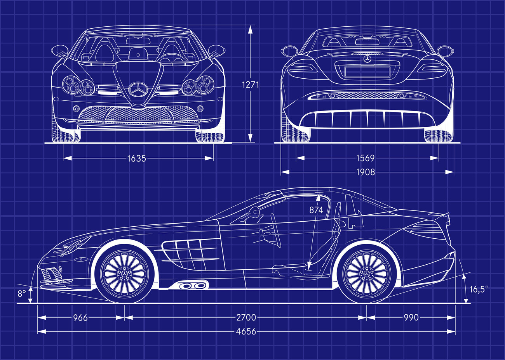

El Mercedes-Benz SLR McLaren es un superdeportivo biplaza con motor central-delantero V8 de 5.4L sobrealimentado, tracción trasera y caja automática de 5 velocidades, destacando por su carrocería de fibra de carbono, puertas diédricas y frenos cerámicos, ofreciendo potencias de 626 CV (o más en versiones especiales) con aceleraciones de 0-100 km/h en unos 3.8s y velocidades máximas superiores a 330 km/h, combinando lujo, tecnología F1 y gran turismo.
